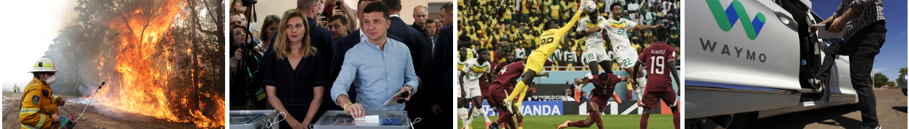
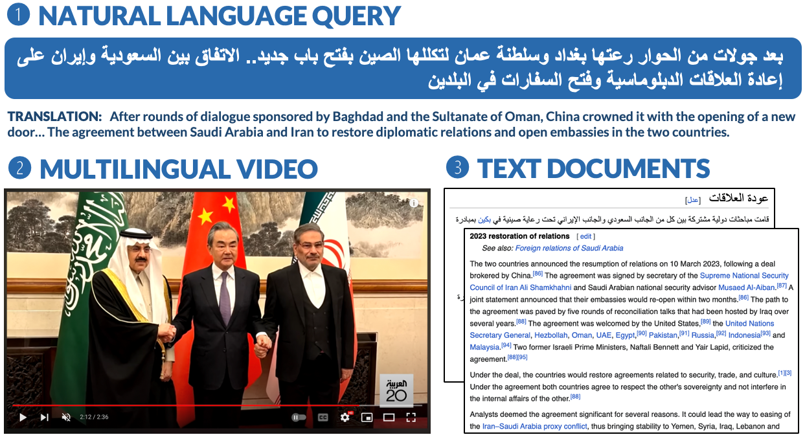

Everyday news coverage
has shifted from traditional broadcasts towards a wide range of presentation formats such as first-hand, unedited video footage. News agencies have adapted to this shift, often collecting and incorporating this online content into official broadcasts, but news video datasets still do not typically address this new domain of event coverage. As the topics covered by professional news coverage are not evenly distributed and many local events are underrepresented, one solution is to leverage information retrieval systems to retrieve information about local events from online. Datasets that reflect the diverse array of multimodal, multilingual news sources available online could be used to build such systems, supporting citizen journalism within local news groups and community organizations.
What is MultiVENT?
We present a dataset of over 2,000 diverse and semantically complex videos of multilingual, online current event coverage amounting to over 55 hours of footage. These videos are each paired with multilingual natural language video descriptions and long-form documents covering the events in detail. The dataset spans 260 diverse current events in total that take place in over forty countries during the last decade.

Above is an example of a data point in MultiVENT. Each data point consists of data anchored to a video depicting a current event – this video can be professionally produced by a news agency, or unprofessional footage uploaded to social media by a random person. The video is produced for speakers of one of our five target languages, in this case Arabic. The video comes with a paired text description in the same language, and up to two long-form text documents describing the current event of interest, usually from Wikipedia. There’s always an English document provided, and if the target language isn’t English, a document in that target language.
MultiVENT is a rich collection of diverse, multilingual data spanning visual, audio, and textual modalities. The dataset facilitates exciting multimodal research in information retrieval, question answering, video summarization, report generation, and more. The dataset uniquely motivates developing information extraction systems robust to lo-fi, low-information video content to better retrieve data from a wider variety of data formats.